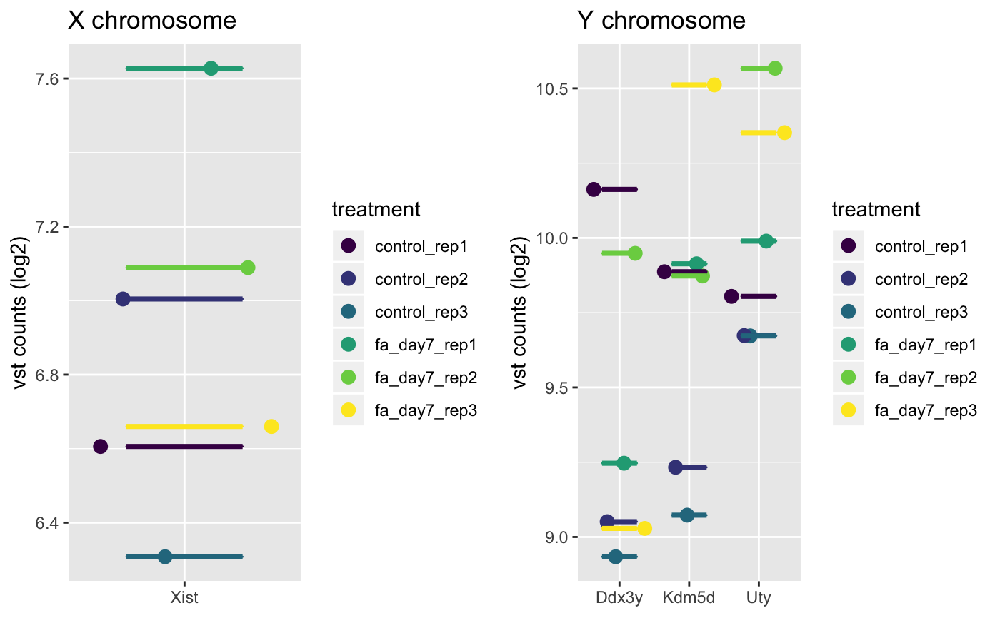

This is a convenience function that wraps plotGene() to quickly plot known
sexually dimorphic genes, and overall gene experssion for the X and Y
chromosomes.
# S4 method for bcbioRNASeq
plotGenderMarkers(object, normalized = c("vst",
"rlog", "tmm", "rle", "tpm", "fpkm"), interestingGroups = NULL,
medianLine = TRUE, color = getOption("basejump.discrete.color",
NULL), legend = getOption("basejump.legend", TRUE), style = "wide")
Arguments
| object |
Object. |
| normalized |
string. Which normalization method to apply:
"tpm": Transcripts per million (tximport). "tmm": edgeR trimmed mean of M-values. Calculated on the fly. "rlog": DESeq2 log2 regularized log transformation. "vst": DESeq2 log2 variance stabilizing transformation. |
| interestingGroups |
character. Groups of interest that
define the samples. If left unset, defaults to sampleName.
|
| medianLine |
boolean. Include median line for each group. Disabled if
samples are colored by sample name.
|
| color |
ggproto/ScaleDiscrete. Desired ggplot2 color
scale. Must supply discrete values. When set to NULL, the default ggplot2
color palette will be used. If manual color definitions are desired, we
recommend using ggplot2::scale_color_manual(). To set the discrete color
palette globally, use
options(basejump.color.discrete = ggplot2::scale_color_viridis_d()).
|
| legend |
boolean. Show plot legend.
|
| style |
string. Plot style.
|
Value
ggplot.
Details
Currently only Homo sapiens and Mus musculus genomes are supported.
See also
Examples
